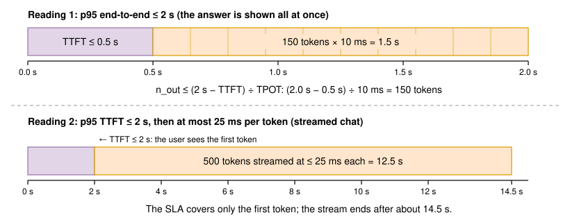
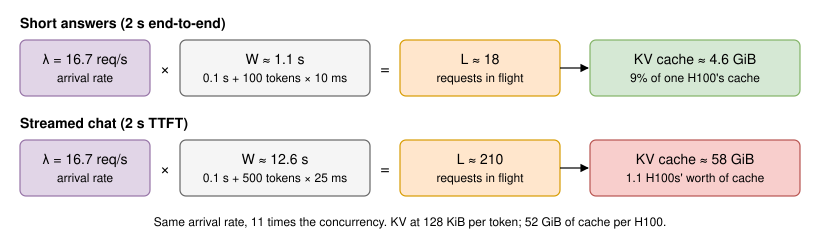
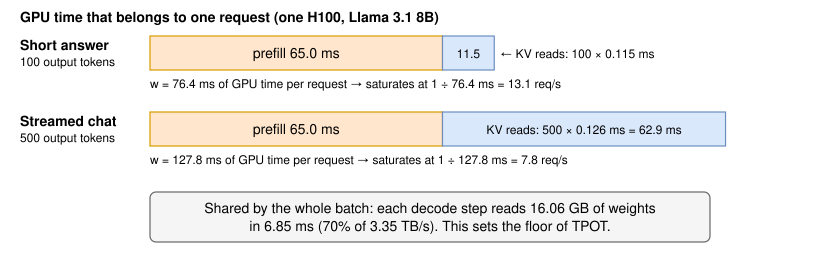
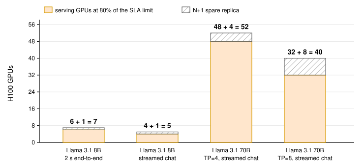
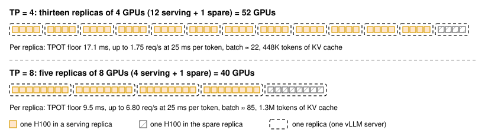

Lab - GPUs for 1,000 Requests per Minute Under a 2s SLA
Introduction
Capacity questions often arrive as one sentence: "How many GPUs do we need to serve 1,000 requests per minute under a 2-second latency SLA?" The sentence hides three unknowns: what the 2 seconds measure, how long the responses are, and how much work one GPU can do while keeping the promise. A guess can be off by a factor of three in either direction.
This lab turns the sentence into a number that traces back to stated assumptions, then checks the number with a load test. Figure 1 shows the flow.
![Five boxes in a row: pin down the SLA (p95 end-to-end at most 2 s, which leaves 10 ms per token), traffic (1,000 requests per minute is 16.7 per second), one GPU's capacity (at most 4.12 requests per second within 10 ms per token), GPU count (ceiling of 16.7 divided by 3.30, plus one spare, is 7 H100s), and a load test with vllm bench serve that compares p95 latency to 2 s. A feedback arrow runs from the load test back to the GPU capacity box: measured latency recalibrates the efficiency assumptions.](images/021-calculation-flow.svg)
In this lab, we fix the meaning of "2 seconds" in a Candidate/Interviewer exchange, apply Little's law, find the largest batch that meets the per-token budget using the decode model of Lesson 3, KV Cache, and Lesson 5, Tokens per Second, count GPUs with an N+1 spare, repeat the exercise for Llama 3.1 70B with tensor parallelism, write a small calculator, and validate it with vllm bench serve at a fixed request rate.
What You Need
Steps 1 to 6 are arithmetic and a Python script; any laptop will do. Only Step 7, the load test, needs a GPU.
| Small path | Full path | |
|---|---|---|
| Hardware | One GPU with 16–24 GB, such as an L4 or a consumer card | One H100 SXM 80 GB; four more for the optional 70B check |
| Software | Python 3.10+, vLLM (Linux, or WSL2 on Windows) | Python 3.10+, vLLM v0.32 or later |
| Model | Qwen2.5-1.5B-Instruct | Llama 3.1 8B Instruct; optionally Llama 3.1 70B Instruct |
| Time | About 1 hour | 2–3 hours |
| Cost | Your own hardware | About $6 for two hours on one H100, plus about $12 for one hour on four H100s, assuming $3.00 per H100-hour |
Table 1: Two ways to run this lab. GPU prices are an assumption; check your provider.
On the small path, use the streamed reading of the SLA from Step 1. A 10 ms per-token budget is out of reach on an L4, where reading Qwen2.5-1.5B's 3.1 GB of weights at 70% of 300 GB/s takes 14.7 ms per step. Under 25 ms per token, the calculator in Step 6 predicts a knee near 1.6 requests per second.
Step 1: Pin Down the SLA
Every number later in the lab depends on what the 2 seconds measure, so we settle it first. Here is a typical exchange:
Candidate: Which model and hardware are we planning for?
Interviewer: Llama 3.1 8B Instruct in BF16 on H100 SXM 80 GB GPUs, served with vLLM.
Candidate: What does the traffic look like?
Interviewer: 1,000 requests per minute on average. Over a day it swings between about 8 and 33 requests per second, but size for the average first. Each prompt is about 2,000 tokens: instructions plus a customer's support ticket.
Candidate: Does "2 seconds" mean the time until the first token appears, or the time until the whole answer is back?
Interviewer: The whole answer. Our agent tool receives a JSON object with a draft reply and shows it all at once. Nothing is streamed.
Candidate: Then the output length decides almost everything. How long are the answers?
Interviewer: About 100 tokens on average. We set max_tokens to 150.
Candidate: Is 2 seconds a limit for every request, or a percentile?
Interviewer: The 95th percentile, measured at our API gateway over any five-minute window.
Candidate: What failures must we survive without breaking the SLA?
Interviewer: The loss of any one GPU.
The question underneath is: how many requests per second can one H100 complete in under 2 seconds when an answer can be 150 tokens long, and how many H100s does that make once we add room for bursts and one failure?
Two readings of "2 seconds"
A request's end-to-end latency is the time to the first token plus one decode step for each further token (Lesson 4, Time to First Token). The first token comes from prefill, so strictly there are decode steps; at 150 tokens the difference is under 1%, and we ignore it:
Under an end-to-end SLA, this caps the output length for any given speed, or the speed for any given output length:
We give TTFT a p95 allowance of 0.5 s, which covers the 65 ms prefill (Step 3) plus queueing, tokenization, and the network. That leaves 1.5 s for 150 tokens: a per-token budget of 10 ms. Figure 2 compares it with the streamed reading, where the SLA covers only the first token.

The streamed reading needs a second target, since a stream that starts on time and then crawls is still a bad experience. We borrow the course's running-example target: p95 TPOT of at most 25 ms, at least 40 tokens per second. We carry both readings through the lab.
The output length matters enormously
Every decode step reads all 16.06 GB of weights, which takes 4.8 ms at 3.35 TB/s even for a batch of one (Lesson 2, Prefill vs Decode). A 500-token answer therefore needs at least 2.4 s, so a 2 s end-to-end SLA for the running example's chat answers is impossible at any fleet size: more GPUs add streams, not speed.
Before doing any capacity math, ask what the latency target measures and how long the outputs are. Then say the per-token budget out loud: "1.5 s for 150 tokens is 10 ms per token, and reading the weights alone takes 4.8 ms, so we have very little room to batch."
Step 2: Turn Requests per Minute into Concurrency
The arrival rate is = 1,000 ÷ 60 ≈ 16.7 requests per second. A GPU, however, does not see a rate. It sees the requests that are inside it at the same moment. Little's law connects the two: the average number of requests in a system equals the arrival rate times the average time each request spends in it [1]:
The law holds for any arrival pattern and scheduling policy. Figure 3 applies it to both readings.

- Short answers: about 0.1 s to the first token (65 ms of prefill plus queueing) and 100 tokens at up to 10 ms gives ≈ 1.1 s and ≈ 18 requests in flight across the fleet. At 2,050 tokens each on average, their KV cache is about 4.6 GiB.
- Streamed chat: 0.1 s plus 500 tokens at up to 25 ms gives ≈ 12.6 s and ≈ 210. At 2,250 tokens each, their cache is about 58 GiB, more than the 52 GiB one H100 holds (Lesson 3).
Same arrival rate, 11 times the concurrency: concurrency, not the request rate, fills the KV cache. Both durations are taken at the SLA limit, so they are upper bounds. And 16.7 is an average; with independent arrivals, the count in any one second varies by about √16.7 ≈ 4 requests. We need headroom for that.
Step 3: Estimate One GPU's Capacity
Where a GPU's time goes
We reuse the bandwidth-bound decode model of Lesson 5 [2]: a decode step reads the weights once for the whole batch, and reads each request's KV cache once. Prefill is compute-bound. Three quantities describe one H100 serving this workload:
- Weight reads per decode step, shared by every request in the batch: = 16.06 GB ÷ 2.35 TB/s = 6.85 ms. The spec sheet's 3.35 TB/s is a peak; we assume decode reaches 70% of it. This is the floor of the time per output token.
- KV reads per request per step: = 2,050 tokens × 128 KiB ÷ 2.35 TB/s = 0.115 ms. A short-answer request holds 2,000 prompt tokens plus, on average, half of its 100 output tokens.
- Prefill per request: = 2 × 8.03B parameters × 2,000 tokens ÷ (50% × 989 TFLOPS) = 65 ms. We assume prefill reaches 50% of peak compute.
Table 2 collects every input; the calculator in Step 6 keeps each one as a named constant.
| Input | Value | Source |
|---|---|---|
| Weights | 8.03B params × 2 bytes = 16.06 GB | Model card [9], BF16 |
| KV cache per token | 128 KiB | Lesson 3 |
| KV cache capacity | ≈ 52 GiB ≈ 426K tokens | Lesson 3, --gpu-memory-utilization 0.90 |
| Memory bandwidth | 3.35 TB/s peak | H100 SXM spec sheet [8] |
| Dense BF16 compute | 989 TFLOPS peak | H100 SXM spec sheet [8] |
| Bandwidth efficiency | 70% | Assumption; measure it in Step 7 |
| Prefill efficiency (MFU) | 50% | Assumption; measure it in Step 7 |
| Prompt / output tokens | 2,000 / 100 mean, 150 max | Interviewer |
| Per-token budget | 10 ms (short answers) or 25 ms (streamed chat) | Step 1 |
Table 2: The inputs of the capacity estimate and where each one comes from
From time per request to maximum request rate
Split the GPU's work into two kinds. Some work belongs to a single request: its prefill, plus reading its KV cache once for each of its output tokens. Call that , the GPU time each request consumes:
The other work is the weight read, once per decode step, shared by the whole batch. Figure 4 shows both budgets for the two readings of the SLA.

If a GPU receives requests per second, it spends of every second on per-request work. Whatever time remains is spent on weight reads, one per decode step, and every request in the batch gains one token per step. Fewer spare seconds means fewer steps per second, and slower tokens for everyone:
The GPU saturates at = 1 ÷ 76.4 ms = 13.1 requests per second. Setting TPOT equal to the budget gives the largest rate that meets it:
Little's law, applied to the decode phase alone, gives the batch at that rate: = 4.12 × 100 × 10 ms ≈ 4.1 requests. That is the largest batch that still meets the per-token budget. Its KV cache, about 4.1 × 2,150 ≈ 8,900 tokens, fills 2% of the 426,000-token cache. For this SLA, latency binds and memory sits idle.
The model is deliberately conservative: it assumes prefill and decode never overlap, while chunked prefill (Lesson 7, Continuous Batching) lets decode tokens ride along in steps that carry a prefill chunk [3]. Step 7 tells us how conservative it is.
The streamed reading and the KV check
For streamed chat, the average context is 2,250 tokens, so = 0.126 ms, = 65.0 + 500 × 0.126 = 127.8 ms, and the GPU saturates at 7.8 requests per second. The 25 ms budget allows = 7.82 × (1 − 6.85 ÷ 25) = 5.68 requests per second, a batch of 5.68 × 500 × 25 ms ≈ 71 whose cache fills at most 42% of capacity. At a 50 ms budget the limit would be 6.75 requests per second with a batch of 169, and memory would bind at the same point: the "170 chat requests" of Lesson 3. Figure 5 plots TPOT against load for both readings.
This matches Lesson 19, GPU Utilization, which puts one H100 at about 5 requests per second at the course's running-example targets (about 53 streams at about 21 ms per step); at 5 requests per second our model predicts 19 ms per token and about 47 streams. The end-to-end reading gets fewer, 4.12, despite answers one fifth as long, because a 10 ms budget allows a batch of only four.
![A chart with requests per second per H100 on the x-axis from 0 to 14 and time per output token on the y-axis from 0 to 40 ms. Both curves start at the 6.85 ms floor. The short-answer curve rises toward an asymptote at 13.1 requests per second and crosses its 10 ms budget at 4.12 requests per second. The streamed-chat curve rises toward 7.8 requests per second and crosses its 25 ms budget at 5.68. Planned operating points at 80% of each limit are marked at 3.30 and 4.54. The curves are model predictions with 70% bandwidth efficiency and 50% MFU.](images/021-tpot-vs-rate.svg)
The curves explain why we will not plan to run at . Near saturation, a small rise in load produces a large rise in latency, and a burst of arrivals pushes the batch past the budget for everyone in it.
How output length changes the answer
Table 3 repeats the short-answer calculation for other output caps, with the same 0.5 s TTFT allowance and a mean output of two thirds of the cap.
| p95 output tokens | Per-token budget | Max req/s per H100 | H100s with headroom and N+1 |
|---|---|---|---|
| 50 | 30 ms | 11.2 | 3 |
| 100 | 15 ms | 7.5 | 4 |
| 150 (our case) | 10 ms | 4.1 | 7 |
| 200 | 7.5 ms | 1.1 | 21 |
| 300 | 5.0 ms | Below the 6.85 ms floor | Not possible |
| 500 | 3.0 ms | Below even the 4.8 ms spec-sheet floor | Not possible |
Table 3: Under a 2 s end-to-end SLA, the output cap sets the GPU count
Raising max_tokens from 150 to 200 triples the fleet. The most valuable capacity lever in this scenario is a product conversation about answer length, or about streaming.
Which reading fits our deployment?
The interviewer's tool shows the whole answer at once, so we plan with the end-to-end reading: 4.12 requests per second per H100. It is worth offering the alternative, since streamed replies under a first-token SLA would allow 5.68 requests per second of 500-token answers. Step 4 shows what that does to the bill.
Step 4: Count GPUs with Headroom
The bare minimum is 16.7 ÷ 4.12 = 4.05, so five GPUs would run each one at its limit, with no margin at all. We add two kinds of headroom:
- Load headroom. We plan each GPU at 80% of , or 3.30 requests per second. The model predicts means, while the SLA is a p95, arrivals are bursty, and tail latency reacts to load far more sharply than the mean does [10].
- Failure headroom. We add one spare replica, so the SLA survives the loss of any one GPU. This is N+1 redundancy.
Check the result with the TPOT formula. With all seven GPUs serving, each receives 2.38 requests per second and the model predicts 8.4 ms per token. With one GPU down, the other six receive 2.78 requests per second each and the model predicts 8.7 ms per token. Both are inside the 10 ms budget.
The streamed reading needs ⌈16.7 ÷ (0.8 × 5.68)⌉ + 1 = ⌈3.67⌉ + 1 = 5 GPUs. Assuming $3.00 per H100-hour, the comparison is stark:
- Short answers, 2 s end-to-end: 7 GPUs, $21 per hour. The fleet produces 60,000 requests × 100 tokens = 6.0M output tokens per hour, or $3.50 per million output tokens.
- Streamed chat, 2 s TTFT and 25 ms per token: 5 GPUs, $15 per hour for 30M output tokens per hour, or $0.50 per million output tokens.
The strict SLA makes each output token seven times more expensive, because it forbids the large batches that make GPUs efficient (Lesson 20, Cost per Million Tokens). Figure 6 summarizes the counts.
Traffic also swings between about 8 and 33 requests per second over the day. The daily peak needs ⌈33.3 ÷ 3.30⌉ + 1 = 12 GPUs for short answers (9 for streamed chat) and the overnight low needs 4 (3). A fleet fixed at 7 misses the SLA every afternoon; Lesson 22, Autoscaling, lets the fleet follow the cycle.

Step 5: Repeat for Llama 3.1 70B with Tensor Parallelism
Now suppose the team wants Llama 3.1 70B. Its 141 GB of BF16 weights do not fit on one 80 GB GPU, so each replica splits the model with tensor parallelism (TP), as in Lesson 18, Tensor Parallelism [5]. A replica of GPUs reads its weights with times the bandwidth, but every layer ends with an all-reduce; we assume these add 2 ms per decode step. Memory rules out TP = 2: 65.7 GiB of weights per GPU leaves about 1.3 GiB for cache, three chat requests per replica. TP = 4 leaves about 137 GiB per replica (448,000 tokens at 320 KiB each) and TP = 8 about 405 GiB (1.3M tokens).
The end-to-end reading is out of reach: the TPOT floor is 35.3 GB ÷ 2.35 TB/s + 2 ms = 17.1 ms at TP = 4, above the 10 ms budget, and 9.5 ms at TP = 8, which would need 272 GPUs. Serving 70B under that SLA needs FP8 weights (Lesson 13, Quantization - FP8, INT8 and 4-bit), speculative decoding (Lesson 15), or a looser SLA.
The streamed reading works, but the 25 ms per-token target is tight for a model this size. For TP = 4, prefill takes 2 × 70.6B × 2,000 ÷ (4 × 50% × 989 TFLOPS) = 143 ms, KV reads add 500 × 0.079 ms = 39 ms, and the 17.1 ms floor leaves only 8 ms of the 25 ms for batching: 1.75 requests per second per replica. Table 4 compares the two TP degrees.
| Per replica | TP = 4 | TP = 8 |
|---|---|---|
| TPOT floor (weights + all-reduce) | 17.1 ms | 9.5 ms |
| GPU time per request, | 182 ms | 91 ms |
| Max req/s at 25 ms per token | 1.75 | 6.80 |
| Batch at that rate | 22 | 85 |
| KV capacity | 448K tokens | 1.3M tokens |
| Serving replicas, ⌈16.7 ÷ (0.8 × max)⌉ | 12 (48 GPUs) | 4 (32 GPUs) |
| With N+1 | 13 replicas, 52 GPUs | 5 replicas, 40 GPUs |
Table 4: Llama 3.1 70B for streamed chat at 16.7 requests per second, under the same assumptions as Table 2

Which TP degree fits our deployment?
We choose TP = 8. Under a 25 ms target, the weight-read floor decides: at TP = 4 it eats 17.1 ms of every 25 ms token, at TP = 8 only 9.5 ms, so each GPU serves 0.85 requests per second instead of 0.44, and the fleet needs 40 GPUs instead of 52. The answer depends on the budget, though. At a looser 50 ms per token, TP = 4 serves 3.62 requests per second per replica and needs 28 GPUs, while TP = 8 needs 32, because N+1 costs one replica and a TP = 8 replica is 8 GPUs. Rerun the comparison whenever the latency target changes.
Step 6: Put It in a Calculator
A spreadsheet works, but a short script is easier to review and rerun. The first tab keeps every assumption from Table 2 as a named constant, computes one replica's capacity with the formulas from Step 3, and counts GPUs as in Step 4. The second tab is what it prints; the numbers follow from the arithmetic above.
"""gpu_calculator.py: GPUs needed for a request rate under a latency SLA (Lesson 21)."""
import math
from dataclasses import dataclass
GiB = 2**30
@dataclass
class Model:
name: str
params: float # number of parameters
bytes_per_param: float # 2 for BF16, 1 for FP8
kv_bytes_per_token: int # Lesson 3: 2 x layers x KV heads x head dim x bytes
@dataclass
class GPU:
name: str
mem_gib: float # visible memory
bandwidth: float # bytes per second (spec sheet)
flops: float # dense BF16 FLOP/s (spec sheet)
@dataclass
class Workload:
rate: float # requests per second at the busy hour
prompt: int # prompt tokens
out_mean: int # mean output tokens
tpot_budget: float # seconds per output token the SLA allows
# Assumptions: replace them with values measured in Step 7.
BW_EFF = 0.70 # fraction of peak bandwidth that decode achieves
MFU = 0.50 # fraction of peak FLOPS that prefill achieves
MEM_UTIL = 0.90 # vLLM --gpu-memory-utilization
OVERHEAD_GIB = 4.6 # activations and CUDA graphs per GPU (Lesson 3)
PLAN_LOAD = 0.80 # run each replica at 80% of its SLA limit
SPARES = 1 # N+1: survive the loss of one replica
def replica_capacity(m: Model, g: GPU, w: Workload, tp: int = 1, comm_s: float = 0.0) -> dict:
bw = g.bandwidth * BW_EFF * tp # a replica reads with all its GPUs
t_w = m.params * m.bytes_per_param / bw + comm_s # per decode step, shared by the batch
ctx = w.prompt + w.out_mean / 2 # average context while decoding
t_kv = ctx * m.kv_bytes_per_token / bw # one request's KV read in one step
t_pre = 2 * m.params * w.prompt / (g.flops * tp * MFU)
work = t_pre + w.out_mean * t_kv # GPU-seconds each request consumes
r_sat = 1 / work # requests/s at which the replica saturates
r_max = r_sat * (1 - t_w / w.tpot_budget) # requests/s at which TPOT hits the budget
batch = r_max * w.out_mean * w.tpot_budget # Little's law for the decode phase
weights_gib = m.params * m.bytes_per_param / tp / GiB
kv_gib = tp * (g.mem_gib * MEM_UTIL - weights_gib - OVERHEAD_GIB)
kv_tokens = max(kv_gib, 0) * GiB / m.kv_bytes_per_token
kv_fits = batch * (w.prompt + w.out_mean) <= kv_tokens
return dict(t_w_ms=t_w * 1e3, t_kv_ms=t_kv * 1e3, t_pre_ms=t_pre * 1e3, r_sat=r_sat,
r_max=max(r_max, 0.0), batch=max(batch, 0.0), kv_tokens=kv_tokens, kv_fits=kv_fits)
def tpot_at(rate: float, cap: dict) -> float:
"""Predicted seconds per output token when one replica receives `rate` requests/s."""
load = rate / cap["r_sat"]
return float("inf") if load >= 1 else cap["t_w_ms"] / 1e3 / (1 - load)
def gpus_needed(w: Workload, cap: dict, tp: int = 1) -> tuple[int, int]:
if cap["r_max"] <= 0 or not cap["kv_fits"]:
return 0, 0 # this configuration cannot meet the SLA
replicas = math.ceil(w.rate / (cap["r_max"] * PLAN_LOAD)) + SPARES
return replicas, replicas * tp
if __name__ == "__main__":
h100 = GPU("H100 SXM", mem_gib=79.6, bandwidth=3.35e12, flops=989e12)
llama8b = Model("Llama 3.1 8B", 8.03e9, 2, 131_072)
llama70b = Model("Llama 3.1 70B", 70.6e9, 2, 327_680)
rate = 1000 / 60
short = Workload(rate, prompt=2000, out_mean=100, tpot_budget=(2.0 - 0.5) / 150)
chat = Workload(rate, prompt=2000, out_mean=500, tpot_budget=0.025)
cases = [("8B, 2 s end-to-end", llama8b, short, 1, 0.0),
("8B, streamed chat", llama8b, chat, 1, 0.0),
("70B TP=4, streamed chat", llama70b, chat, 4, 0.002),
("70B TP=8, streamed chat", llama70b, chat, 8, 0.002)]
for label, m, w, tp, comm in cases:
cap = replica_capacity(m, h100, w, tp, comm)
replicas, gpus = gpus_needed(w, cap, tp)
print(f"{label:26s} TPOT floor {cap['t_w_ms']:5.2f} ms | max {cap['r_max']:5.2f} req/s "
f"per replica, batch {cap['batch']:5.1f} | {replicas} replicas = {gpus} GPUs")For the small path, add GPU("L4", 22.5, 300e9, 121e12) and Model("Qwen2.5-1.5B", 1.54e9, 2, 28_672); Qwen2.5-1.5B has 28 layers and 2 KV heads of size 128, so 28 KiB per token. For any model, the most trustworthy KV capacity is the one vLLM prints at startup, so replace the computed kv_tokens with the logged value once you have it.
Step 7: Validate with a Load Test
Serve one replica
Replicas run independently, so we validate one H100 and scale by the replica count. Recent vLLM releases default --gpu-memory-utilization to 0.92; we set 0.90 explicitly to match Lesson 3's budget [7].
Drive it at a fixed request rate
vllm bench serve generates an open-loop load: --request-rate sets the average number of requests per second, and arrival times follow a Poisson process unless you change --burstiness (values above 1 make arrivals more evenly spaced) [6]. Do not set --max-concurrency: it makes the test a closed loop that slows down with the server and hides queueing. A range ratio of 0.5 on the output spreads lengths over 50 to 150 tokens, --ignore-eos makes the model produce exactly those lengths, and --goodput e2el:2000 counts requests that finish within 2 s, the goodput idea from DistServe [4]. The key rate is 2.78 requests per second, each replica's share after one of seven fails; the sweep around it locates the knee, and the third tab compares the results with the calculator.
# One replica on one H100.
vllm serve meta-llama/Llama-3.1-8B-Instruct \
--gpu-memory-utilization 0.90 \
--max-model-len 4096
# The startup log reports the cache: "GPU KV cache size: <N> tokens".What you should see: the model predicts a mean TPOT of 7.4 ms at 1 request per second, 8.7 ms at 2.78, 9.2 ms at 3.30, 10.0 ms at 4.12, 11.1 ms at 5, and 12.6 ms at 6. Your measurements will differ as far as the 70% and 50% efficiency assumptions are off, and finding that gap is the point. For the SLA, p95 end-to-end must stay below 2.0 s at 2.78 and 3.30 requests per second, with 95% or more of requests within 2 s.
Test the fleet at 16.7 requests per second
With the full fleet, put the seven replicas behind a load balancer and run the same command with --base-url pointing at it, --request-rate 16.67, and --num-prompts 5000. Halfway through, stop one replica: p95 should stay below 2 s while the other six absorb its share. That tests the N+1 promise instead of assuming it.
Reading the Results
Start at the lowest rate. At 1 request per second the batch is tiny, so TPOT is almost pure weight reading. If you measure 7.0 ms where the model predicts 7.4 ms, decode is reading weights faster than assumed: the implied weight read is 7.0 × (1 − 1 ÷ 13.1) ≈ 6.5 ms, so bandwidth efficiency is about 4.8 ÷ 6.5 ≈ 74% rather than 70%. Update BW_EFF. Then compare TTFT at low load with the 65 ms prefill estimate to adjust MFU, rerun the calculator, and see whether the GPU count changes.
Then look at the shape. Figure 8 shows the typical result of a sweep next to the model's prediction; the points are illustrative. Latency stays nearly flat, bends, then climbs steeply near saturation, when requests start waiting for a place in the batch and TTFT grows along with TPOT.
![A chart with requests per second per replica on the x-axis from 0 to 8 and p95 end-to-end latency on the y-axis from 0 to 5 s. The model's curve for a 150-token answer with a 0.5 s TTFT allowance starts at 1.5 s and crosses the 2 s SLA line at 4.12 requests per second. Illustrative measured points sit below the curve at low load, cross 2 s a little above 4 requests per second, and rise steeply beyond 5. Vertical markers show 2.78 (one replica down) and 3.30 (the 80% plan). The data points are illustrative, not measurements.](images/021-measured-vs-model.svg)
- Measured latency below the model at low load is expected. The model charges the full 0.5 s TTFT allowance, while real TTFT at low load is closer to the 65 ms prefill.
- The knee earlier than predicted means the efficiency assumptions were optimistic, or the benchmark prompts are harder than the production ones. Recalibrate and recount.
- p95 above 2 s at 2.78 requests per second fails the SLA. Look at which part grew. A large p95 TTFT points to queueing behind prefill; a large TPOT points to decode. Both can be bought back with FP8 weights or a smaller
max_tokens, and Table 3 tells you how much each buys. - The streamed reading needs no new tools: run the same sweep with
--random-output-len 500and a range ratio of 0, check p95 TTFT against 2 s and p95 TPOT against 25 ms, and use--goodput ttft:2000 tpot:25.
Common Pitfalls
- Planning with the mean output length. The p95 latency belongs to the long answers. Use the cap or the p95 output length for the per-token budget, and the mean for the load.
- Spec-sheet bandwidth as achievable bandwidth. Planning at 100% of 3.35 TB/s would put the TPOT floor at 4.8 ms instead of 6.85 ms and overstate capacity by about half.
- Synthetic prompts that don't match production. Random prompts get no prefix cache hits, while production traffic with a shared system prompt may skip much of its prefill (Lesson 24, Prefix Caching). Without
--ignore-eos, outputs may also end early. Validate on a sample of real prompts before cutting GPUs. - Measuring from the wrong place. The SLA is measured at the gateway. A benchmark client on the same host as vLLM misses network time, TLS, and authentication; one on another continent adds too much.
- Rounding too early, or forgetting the daily cycle. Keep fractions until the final ceiling, then add the spare, and size the peak of the day separately from the average.
Stretch Goals
- Rerun the calculator with FP8 weights and an FP8 KV cache (Lesson 13). Set
bytes_per_param=1, use 65,536 bytes per token, and see how the short-answer GPU count moves. Then validate it, including an accuracy check. - Add a TTFT model: treat prefill as a queue with arrival rate and service time , and check the 0.5 s allowance at p95.
- Measure the all-reduce cost at TP = 4 and TP = 8 as in Lesson 18, and see whether TP = 8 still wins per GPU.
- Size a disaggregated deployment (Lesson 34, Disaggregated Prefill and Decode): a prefill pool sized from alone, and a decode pool sized with the TPOT formula and . Compare its GPU count with Step 4.
Summary
- Pin down the SLA before doing math. Under a 2 s end-to-end SLA, the output length sets the per-token budget: (2 s − 0.5 s) ÷ 150 tokens = 10 ms.
- 1,000 requests per minute is 16.7 per second. Little's law turns it into about 18 requests in flight for short answers, or about 210 for streamed 500-token chat.
- One H100 serving Llama 3.1 8B reads its weights in 6.85 ms per step at 70% efficiency. TPOT grows as , which allows 4.12 requests per second within 10 ms per token, or 5.68 within 25 ms, in line with Lesson 19's estimate of about 5.
- At 80% planned load plus an N+1 spare, short answers need 7 H100s ($3.50 per million output tokens at $3.00 per GPU-hour); streamed chat needs 5 ($0.50).
- Llama 3.1 70B cannot meet the end-to-end SLA in BF16. For streamed chat at 25 ms per token it needs 40 GPUs as five TP=8 replicas, against 52 at TP=4; at 50 ms per token the order flips.
- Validate with open-loop load from
vllm bench serve --request-rate: check p95 at each replica's post-failure share, then recalibrate the efficiency assumptions from what you measure.
Reference Material
[1] Little. A Proof for the Queuing Formula: L = λW. Operations Research, 1961. https://doi.org/10.1287/opre.9.3.383.
[2] Pope et al. Efficiently Scaling Transformer Inference. https://arxiv.org/abs/2211.05102.
[3] Agrawal et al. Taming Throughput-Latency Tradeoff in LLM Inference with Sarathi-Serve. https://arxiv.org/abs/2403.02310.
[4] Zhong et al. DistServe: Disaggregating Prefill and Decoding for Goodput-optimized Large Language Model Serving. https://arxiv.org/abs/2401.09670.
[5] Shoeybi et al. Megatron-LM: Training Multi-Billion Parameter Language Models Using Model Parallelism. https://arxiv.org/abs/1909.08053.
[6] vLLM documentation: vllm bench serve. https://docs.vllm.ai/en/latest/cli/bench/serve.html.
[7] vLLM documentation: Engine Arguments. https://docs.vllm.ai/en/latest/configuration/engine_args.html.
[8] NVIDIA. H100 Tensor Core GPU. https://www.nvidia.com/en-us/data-center/h100/.
[9] Meta. Llama 3.1 8B Instruct model card. https://huggingface.co/meta-llama/Llama-3.1-8B-Instruct.
[10] Dean and Barroso. The Tail at Scale. Communications of the ACM, 2013. https://doi.org/10.1145/2408776.2408794.
![ask alex]()
![ask alex expend]()